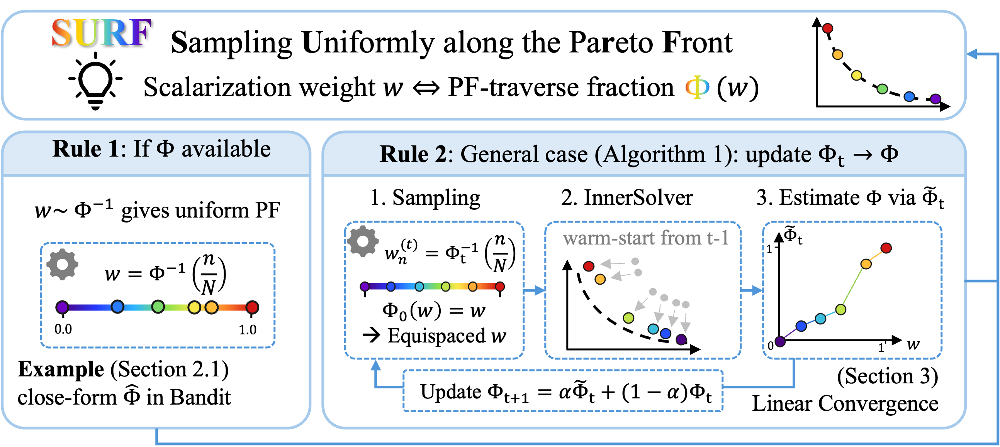
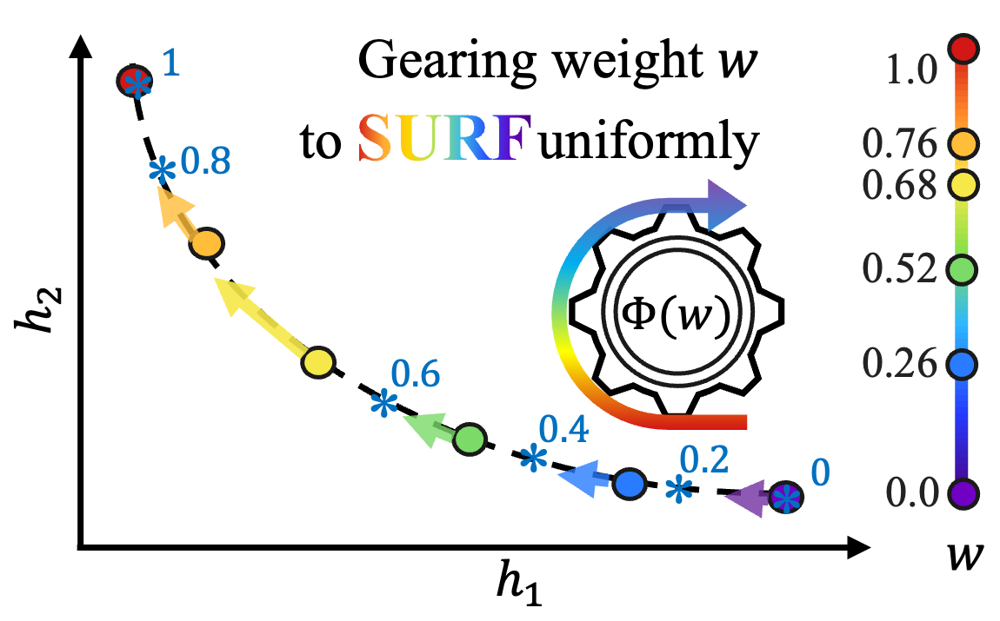

Even preferences. Uneven trade-offs.
SURF selects scalarization weights using an arc-length map of the Pareto front, so a limited solution budget can represent trade-offs more evenly.
Choose a well-spaced menu of model trade-offs.
The decision
A summarization system can reward both a useful summary and a faithful one. A weighted loss selects one compromise. A well-spaced collection of models gives users a range of quality–faithfulness balances to choose from.
The bottleneck
An equal change in the scalarization weight can move the solution a long distance in one region and barely move it in another. Uniform preferences can therefore spend several training slots on similar models while leaving other trade-offs sparsely represented.
The idea
Measure distance in objective space. SURF estimates how much of the front has been traversed at each weight, inverts that cumulative-distance map, and places training slots at equal distance targets. The scalarized inner solver can remain PPO, Adam, or another suitable solver.

SURF connects weights to arc length through a CDF. When the map is known, it is inverted directly; otherwise the method alternates between scalarized solves and CDF reconstruction.
Original paper sourceRead left to right
A weight produces a solved model and an objective vector. The cumulative arc-length map connects that vector back to the weight.
Two routes to the same goal
Rule 1 inverts a known map. Rule 2 reconstructs it from solved points and refines it over outer iterations.
What changes in training
Weights are reassigned and models warm-start from their previous slot. Each slot continues training with its chosen inner optimizer.
How the method works
- 01
Solve weighted problems
Keep a scalarized inner solver and collect its objective vectors.
- 02
Reconstruct the distance map
Estimate the cumulative fraction of Pareto-front arc length reached by each weight.
- 03
Invert equal quantiles
Choose weights at equal increments of cumulative distance, then solve again.
Uniform weights describe the input to the solver. Uniform arc length describes the output geometry. The weight-to-front map generally stretches some intervals and compresses others; its traversal speed supplies the density correction.
Make the idea tangible.

The paper’s bandit example compares points produced by uniform weights with points from geometry-aware sampling. Even spacing in weight space does not imply even spacing on the Pareto front.
Original paper sourceChange traversal, keep the same front
The paper’s gear parameter changes how equal weights move through the same evaluation front. Compare their coverage with equal arc-length targets.
N segments give solutions. This Appendix F.1 example uses the exact scalarized solution and direct numerical arc-length inversion. SURF’s iterative reconstruction is described in the method section.
Why a well-spaced front helps
For summarization, the output is a set of differently aligned adapters. A user can select a quality–faithfulness balance without repeatedly encountering nearly identical trade-offs. Arc length depends on objective units, so the metric and normalization are part of the design choice.
More even coverage, with quality retained
Choose a comparison to inspect the reported values, then open its setup for the evaluation details.
Quality and faithfulness on Reddit summarization
| Method | Hypervolume ↑ | Spacing CV ↓ | Gap ratio ↓ |
|---|---|---|---|
| Uniform-w | 3.76 ± 0.31 | 0.65 ± 0.12 | 5.89 ± 1.15 |
| SURF | 4.03 ± 0.35 | 0.30 ± 0.17 | 2.93 ± 5.35 |
Scroll horizontally to see all columns.
Coverage becomes more even while hypervolume is retained and modestly improves. Gap ratio is sensitive to a very short segment: its large standard deviation matters when interpreting the mean.
Experiment setup and comparison details
Qwen2.5-0.5B-Instruct with a frozen backbone and LoRA adapters; PPO optimizes summary-quality and factual-faithfulness rewards with KL coefficient 0.05. segments gives six model slots. Both methods use 12 PPO epochs per slot; evaluation uses 10 batches of 64 prompts. Reward-only values are separate parenthesized entries in the paper.
Fishwood separates front quality from spacing
| Method | HV (×10⁻¹) ↑ | IGD (×10⁻²) ↓ | CV (×10⁻¹) ↓ | Gap ratio ↓ |
|---|---|---|---|---|
| Soup | 2.39 ± 0 | 0.91 ± 0 | 2.00 ± 0 | 1.90 ± 0 |
| Uniform-w | 2.40 ± 0 | 0.91 ± 0 | 1.94 ± 0 | 1.75 ± 0 |
| UMOD | 2.39 ± 0.00 | 0.92 ± 0.00 | 2.33 ± 0.17 | 2.14 ± 0.14 |
| OLS | 2.39 ± 0 | 0.96 ± 0 | 3.57 ± 0 | 2.49 ± 0 |
| SURF | 2.39 ± 0 | 0.90 ± 0 | 0.26 ± 0 | 1.12 ± 0 |
Scroll horizontally to see all columns.
Most methods reach similar hypervolume and IGD on this task. SURF’s main gain here is spacing, which is a separate question from reaching good objective values.
Experiment setup and comparison details
Fishing reward competes with wood-collection reward. SURF uses segments, 15 outer iterations, and damping 0.3. Table 1 aggregates eight realizations; zero standard deviation denotes a deterministic experiment.
The metric shapes the coverage
Uniform coverage is measured by arc length in objective space. Rescaling an objective changes that geometry, so units and normalization determine which trade-offs receive equal spacing.
From the intuition to the formulation.
Equations 4–5 define , , , and . Rule 1 uses the targets for n = 0, …, N. Algorithm 1 uses damping to update .
Match a distribution on the front
Traversal speed determines the density correction along a well-defined, monotone scalarization-induced path. Inverting its normalized arc-length map assigns weights to evenly spaced points on that path.
Read the statementRefinement contracts to a resolution floor
Under Assumptions 1–3, sufficiently many segments, and the stated inner-solver budget, the combined CDF and optimization error contracts geometrically to . Here N counts segments and the endpoints give solutions.
Read the statementNotation and the reasoning behind the formulation
- w
- Scalar weight; the bi-objective weight vector is [w, 1 − w].
- Objective vector on the scalarization-induced Pareto-front path.
- Traversal speed: the norm of the weight derivative of .
- Arc length traversed from weight 0 to weight w.
- Normalized arc length /s(1), exactly as in Equation 5.
- N
- Number of front segments; n runs from 0 to N, giving solutions.
A scalarization induces a path
Write for the objective vector at a scalarized optimum. The norm of is the speed of that path in objective space. A fixed weight interval can therefore correspond to a very different distance at another part of the front.
Normalize distance into a distribution
Integrating gives , and normalization gives the paper’s CDF . Rule 1 assigns , for n = 0, …, N.
Reconstruction creates an error floor
For general problems, SURF reconstructs the map from finitely many solved points and refines it iteratively. Theorem 1 gives geometric contraction toward an discretization floor. Increasing N improves that resolution.
Assumptions behind the analysis
Under Assumptions 1–3 and the stated inner-solver budget, SURF’s combined CDF estimation and optimization error contracts geometrically toward an discretization floor. N counts segments, so there are sampled solutions. The theorem assumes hidden-space strong convexity, path regularity, and a sufficiently accurate monotone reconstruction.
Section 3 · Algorithm 1 and Theorem 1 in the paperQuestions worth asking
What determines uniform spacing?
Uniform spacing means equal arc-length gaps in the selected objective-space metric. The objective units and normalization determine that metric.
What does the interactive example demonstrate?
The quadratic gear toy in Appendix F.1 keeps the evaluation front fixed while changing traversal speed. The demo evaluates the exact scalarized solution and obtains arc-length targets by numerical integration and direct inversion.
Continue the research thread
SURF studies how to allocate solutions across competing objectives. The bilevel papers study a different geometry: how an outer decision interacts with an optimized inner response.
Cite this work
@inproceedings{jiang2026surf,
title = {SURF: Steering the Scalarization Weight to Uniformly Traverse the Pareto Front},
author = {Liuyuan Jiang and Chentong Huang and Lisha Chen},
booktitle = {NeurIPS 2026},
year = {2026},
url = {https://arxiv.org/abs/2605.20619}
}